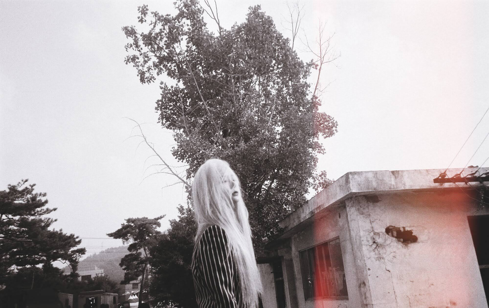

oii esse eh + 1 sit qeu fiz pq sofro d tedio cronico! ele tava em ingles mas mudei fds aaaaaa
esse sit passou por milhoes e milhoens de alteraoçes e ainda nn tou satsfeito c/ o resultado. em breve vo umudar dnv.. aff so acho qe
vc pode jogar o joginho ou ler minha lidna biografia ou deixar uma msg carinhosa ou ver essa mrd de copia do ps2 em 3d q nao afço ideia do pq eu perdi tnt tempo fznd isso ficou orrivel serio pq ngm me avisou antes???//
<-- click to go to the guestbook!
euzinhe :3 -sqn